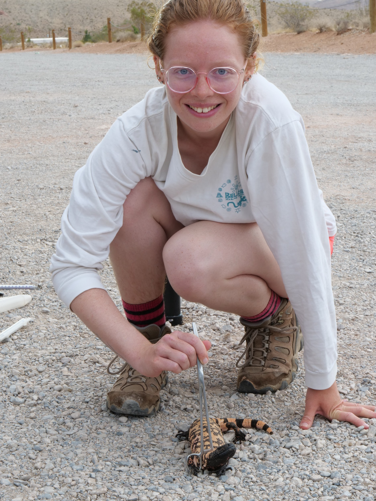

I'm a graduate student and wildlife biologist interested in spatial ecology and conservation. I am broadly interested in answering questions about how and why animals use space and assessing drivers and implications of temporal patterns of space use, as well as how we can use movement ecology to inform conservation decisions and mitigate human-wildlife conflict. My current work focuses on understanding the long-term temporal variation in spatial use of Gila monsters (Heloderma suspectum) at the individual, population, and community levels. A collaborative effort between partners at Austin Peay State University, the Nevada Department of Wildlife, and Clark County, Nevada, has yielded long-term telemetry data from three locations in southern Nevada which I am using to provide insight into the temporal heterogeneity of space use of this unique lizard that lives decades in the wild.
I am an adaptable field and quantitative ecologist who strives to participate in impactful research. As an undergraduate I conducted a project examining habitat preferences of songbird species in an Appalachian old-growth forest, and completed a thesis to determine the impacts of poultry-rearing facilities on stream fish diversity in a South Carolina river basin. I have also assisted in long-term monitoring projects for herpetofauna of the American southwest and for fish and turtles in the Illinois and Mississippi rivers. Feel free to peruse the research pages of this site to learn more about these projects.
When I'm not working, I enjoy finding local birds and herptiles and hiking with my partner, Jesùs, and dog, Yosie. On a rainy day you can find me reading, cooking vegetarian meals, playing video games, or training Yosie! I helped train service dogs for three years and try to keep my training skills sharp.